May 2, 2009
The Global Biodiversity Information Facility (GBIF) works to make digital biodiversity data openly and freely available on the internet for everyone. GBIF provides access to scientific biodiversity data for decision-making, research endeavours and public use. GBIF endorses both open source software and open data access.
In terms of structure, GBIF is a dynamic, growing partnership of countries, organisations, institutions and individuals working together to mobilise scientific biodiversity data.
GBIF is also a network of data publishers who retain ownership and control of the data they share. Linked datasets provide a more robust representation of biodiversity than any single dataset.
In this framework, GBIF develops software tools to make it possible to easily integrate biodiversity data from heterogeneous sources using common standards and protocols. One of these tools is the GBIF Integrated Publishing Toolkit (IPT) that this user manual refers to.
The GBIF IPT is an open source, Java (TM) based web application that connects and serves three types of biodiversity data: taxon primary occurrence data, taxon checklists and general resource metadata. The data registered in a GBIF IPT instance is connected to the GBIF distributed network and made available for public consultation and use. Several factors have motivated the development of this new tool:
The GBIF IPT, as an open source project, is made freely available for both those who wish to use it to publish their data and those who wish to participate in its development, documentation and helpdesk. This is a list of the current online resources related to the GBIF IPT:
The GBIF Integrated Publishing Toolkit (IPT) is an open source Java-based web application. It embeds its own database, is easily customisable and is multilingual. It has a user management feature based on roles, which allows for multiple data managers to share a common instance.
It connects and serves three types of data : taxon primary occurrence data, taxon checklists and general resource metadata. The IPT manages multiple data sources and has several upload options: relational database management systems or tab files. It does not however accept manual entries (except for individual metadata descriptions).
Its public web interface allows for data browsing and full text search. It also offers customised details pages for the three types of data, with specific functionality for each type (i.e. density maps, metadata edition).
The IPT manages Universally Unique IDentifiers (UUID), recycling existing IDs or providing new ones, as appropriate. It also manages technical metadata about the installation and allows for an easy setup of Google Analytics for usage statistics.
The IPT will run on any of the most widespread Operating Systems (Linux, Mac OS (TM), MS Windows (TM)) provided that:
It is beyond the scope of this manual to provide detailed installation and configuration instructions for the virtual machine and the server. Here is a quick overview for MS Windows (TM) and Mac OS (TM) computers.
Mac OS X (TM) includes a fully configured and ready-to-use Java runtime environment.
For MS Windows (TM) machines, follow these steps to install:
The IPT should run in any compliant java application server using Java 1.5. Tomcat 5.5 is recommended for the installation. It was also successfully tested on Tomcat 6 and Jetty.
The application server will require a rather large amount of memory allocated as the IPT runs a full database. It is recommended to increase the server's available memory to at least 1GB (see general instructions below).
Tomcat comes with very little allocated memory. In order to improve performance levels, this amount should be increased depending on the physical memory on the server. If the server has at least 2GB of RAM, the available memory should be increased to 1GB. For more information on how to do this, see the following links:
GeoServer (http://geoserver.org/) is an open source software server written in Java that allows users to share and edit geospatial data. It is used to run IPT geographic web services via a plugin that can access the IPT cache. If there is already a geoserver installation on the server, only the plugin needs to be installed. If there is no such installation, a geoserver archive bundled with the plugin is provided.
This installation is required if the Geoserver is not yet installed on the machine.
If the Geoserver is already installed on the server, only the plugin needs to be installed.
In order to allow the IPT and the Geoserver to communicate to one another, it is necessary to define the IPT Base Directory. This is done by:
This procedure will be explained with more details in the Configuration section of this document.
For more information about the Geoserver, please refer to its own manual: http://geoserver.org/
A standalone version without any dependencies is provided for Mac OS X. It is very easy to install as it only requires a simple click and is very convenient to test the IPT. It should not however be used for production purposes. At the time of writing, the disk image can be downloaded from the following address: ftp://ftp.gbif.org/projects/ipt/downloads/ipt-1.0b.8.dmg
Once the IPT has been installed, it is accessible in a web browser at the following URL: http://localhost:8080/ipt/
To be able to configure the software, one must login as administrator by clicking on the Login button in the main menu and entering a username and password. By default, the administrative username is admin and the password is also admin.
Once logged in, a new Admin section appears in the menu. The subsequent drop-down menu offers the following choices:
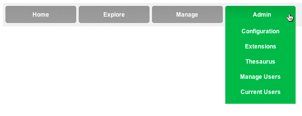
The Configuration section is divided into three configuration options available via the menu on the right hand side of the page:
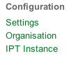
The Settings page allows the administrator to define a number of parameters that are essential for the IPT to function correctly.
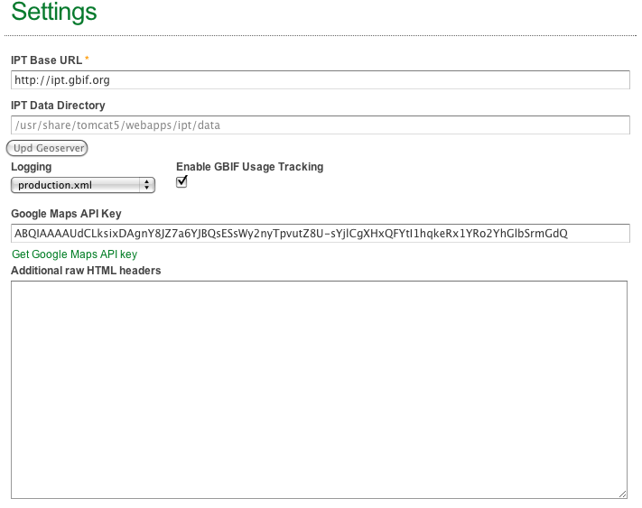
This is the URL of the IPT. It is filled in by default with the local URL (http://localhost:8080/ipt). ). In order to make the IPT instance accessible by distant users on a network, the parameter should be changed to the public URL (e.g. http://67.233.45.122:8080/ipt or http://example.com:8080/ipt).
This field defines the location of the IPT data folder in the file system. It is filled in by default and does not need to be changed. It is followed by a button that must be clicked for the Geoserver to know where to access the IPT. If the IPT is moved or renamed, it is necessary to renew the location by pressing the Update Geoserver button.
This option is used for debugging purposes. It should be left on production.xml except in case of bugs and errors, in which case it can be moved to help developers in their debugging.
Before changing this setting, the administrator should contact the IPT developpers.
The GBIF usage tracking box is used to track the usage of all IPT instances.
In order to use Google Maps (TM) feature embedded in the IPT pages, it is necessary to own a Google Maps API Key. This free key is specific to a server and needs to be requested for each public installation. The administrator can get such a key for free by clicking on the “Get Google Maps API key” link and following instructions provided by Google.
This field allows the manager to add some HTML headers to all pages of the IPT instance. It can be useful to add keywords or usage tracking (e.g. Google Analytics).
The content must be XHTML compliant and will be included in the HEAD section of every single HTML page.
The Settings page also allows the administrator to define some parameters for the Geoserver. For more information about the Geoserver, see its users guide: http://geoserver.org/display/GEOSDOC/Users+Guide
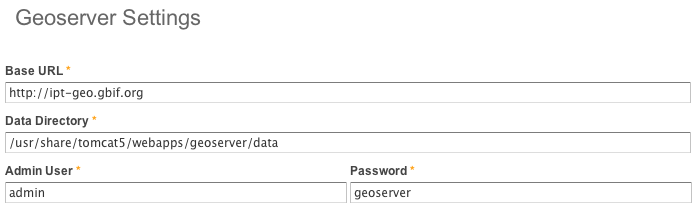
The Base URL is the URL of the Geoserver. It is filled in by default with the local Geoserver URL (http://localhost:8080/geoserver). In order to make the Geoserver accessible by distant users on a network, the parameter should be changed to a public URL (e.g. http://67.233.45.122:8080/geoserver or http://example.com:8080/geoserver).
The Data Directory is the location in the server file system of the directory where data reside. It is filled in by default but can be modified manually.
By default, the administrative username is admin and the administrative password is geoserver. These parameters must be changed if the server is to be used for production and/or accessible to the public.
This page allows the administrator to define the GBIF organisation hosting the IPT installation. It is necessary to define the organisation in order to register the IPT. The GBIF keeps a directory of organisations, resources and services and a password is necessary to register the organisation or to access its data.
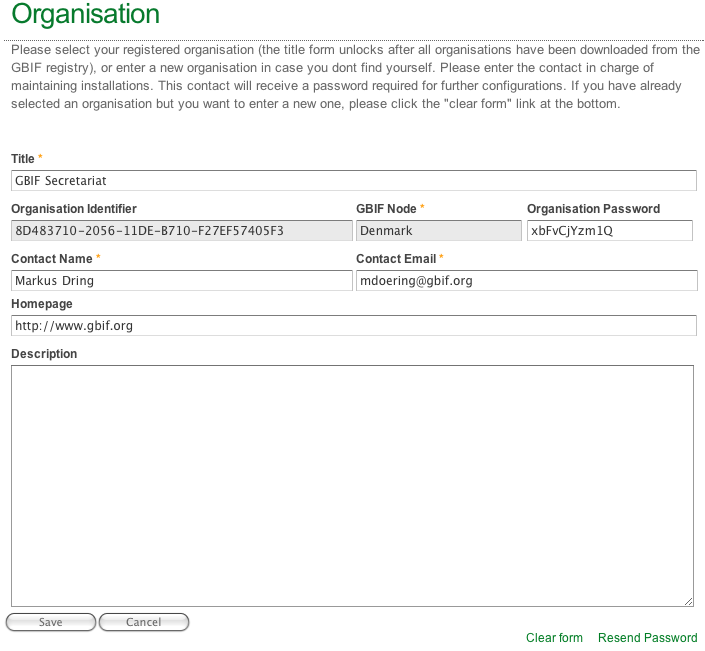
The following fields must filled in:
This page allows the administrator to define some parameters regarding the IPT instance that is being run. The information filled in on this page will be used to feed the homepage of this IPT instance.
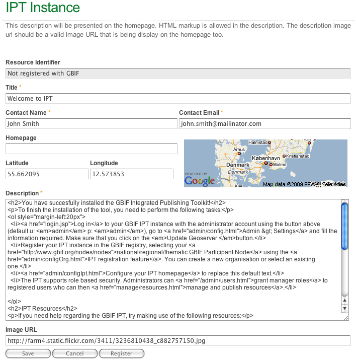
Extensions allow for serving additional data types, such as multiple identifications or descriptive data about species.
The page provides a list of available extensions and shows whether they are installed or not. Each extension can be installed or uninstalled by clicking on its name.
By default, available extensions are:
Clicking on an extension name will open a new page with information about the extension, including a list of properties. The administrator can get more information about a property by clicking on its name. It is also possible on this page to install or remove an extension.
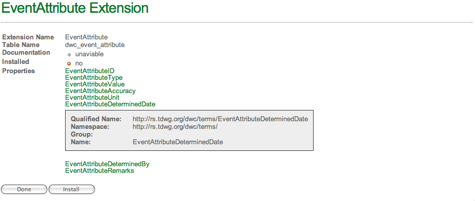
It is also possible to define custom extensions, but the process is not automated in version 1.0 of the IPT.
Thesaurus vocabularies allow for specifying controlled vocabularies to help standardise concepts. This page shows a list of the available thesauruses.
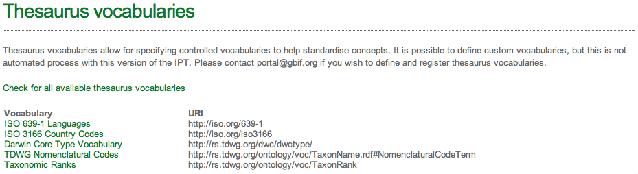
By default, the available thesauruses are:
Clicking on a thesaurus name will open a new page with information about the thesaurus, including a list of terms.
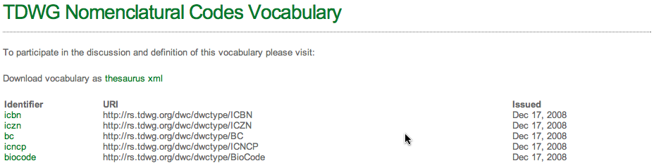
It is also possible to define custom vocabularies, but the process is not automated in version 1.0 of the IPT.
This page allows the administrator to manage users. It displays a list of users with their usernames, full names and emails. Clicking on the username edits the user profile. The list can also be exported using different formats (CSV, Excel, XML and PDF).
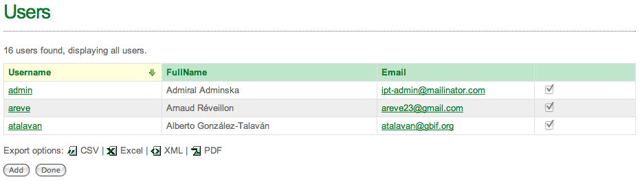
The administrator can also add a new user through the Add button at the bottom of the page.
The User Profile page allows the administrator to add a new user or to edit or delete an existing user.

To add a new user, the following fields must be filled in:
The administrator must also apply some settings to the account:
Finally, the administrator must assign one or several roles to the account. The following roles are available:
To assign a user a role, the administrator must select it in the Available Roles column and click on the arrow to move it in the Current Roles column.
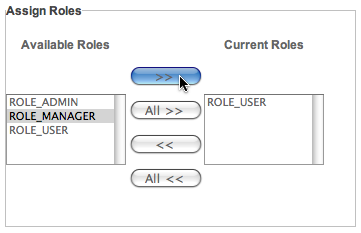
Conversely, to remove a role from a user, the administrator must select it in the Current Roles column and click on the arrow to move it back to the Available Roles column.
A visitor that is not logged in is considered to be an anonymous user. Such a user can explore the site and browse the published information.
This page displays a list of the currently logged in users on the IPT. The administrator is offered the possibility to send them an e-mail.
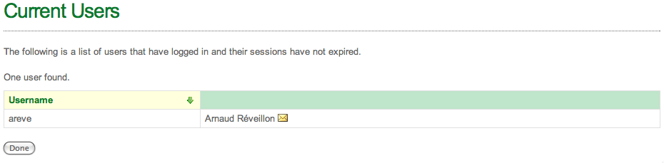
Taxon Primary Occurrence Data (or simply, occurrence data) is defined in the scope of GBIF as digital text or multimedia data record detailing facts about the instance of occurrence of an organism, i.e. on the what, where, when, how and by whom of the occurrence and the recording.
In terms of connecting data to the IPT, an occurrence dataset is defined as a table or database storing information about the distribution of biological organisms in the form of points defined by a textual description and/or geographical coordinates.
Taxonomic checklist data refers to structured data providing information about taxonomic names and their relationships.
In the context of GBIF, metadata records are those which provide information about the suppliers of biodiversity data and about the origins and purpose of those data.
As regards the IPT, a metadata record is composed of all the descriptive information that must be attached to a dataset in terms of origin (who produced the original data, who is connecting it to the IPT instance), contents (both taxonomically and geographically), intellectual property rights, etc.
New resources are created by a manager (or an administrator) on the Manage page.
The manager chooses which resource type to create by clicking on the corresponding link in the Resource Actions menu: New Occurence Resource, New Checklist Resource or New Metadata Resource.
When the resource has been created, the manager can add its metadata.
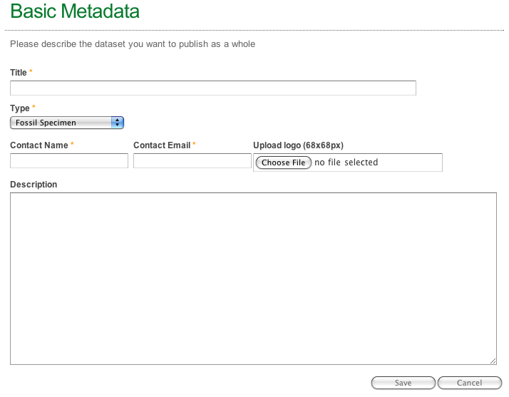
The first step is to basically describe the dataset that will be published. The manager must fill in the following fields:
Once the fields have been filled in and the form saved, the resource is created and can be accessed from the Manage section.

This section describes the originator of the resource, i.e. the person responsible for the information entered in the IPT. The following fields are to be filled in:
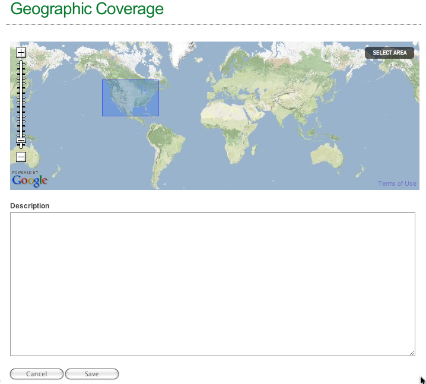
In this section, the manager can describe the geographic coverage of the resource by drawing it on a map.
The manager can navigate on the map by clicking and dragging the cursor around and can zoom using the scale on the left of the map. Double-clicking somewhere on the map will zoom and centre the map on that point.
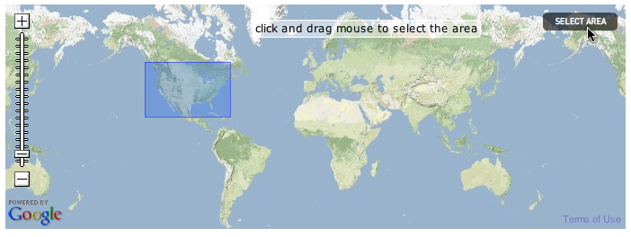
The manager must click on the grey select area button in the top right corner of the map. Clicking and dragging with the mouse will define the geographic coverage area. Only one area can be created per map.
The manager can describe the geographic coverage in the box below the map.
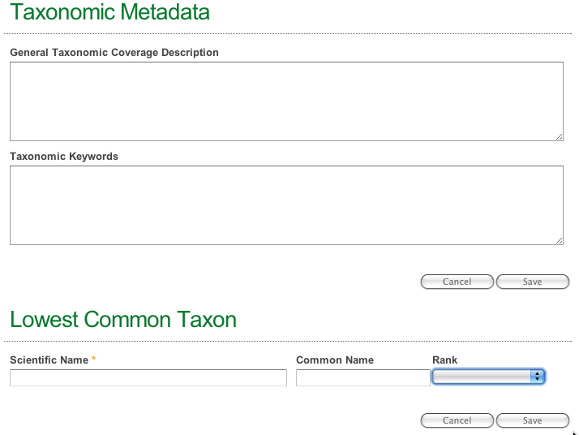
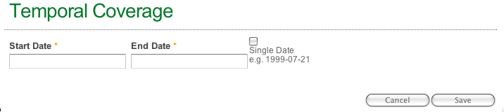
The manager must fill in the temporal coverage of the collection of information related to the resource: start and end date. The dates must be filled in using the format "YYYY/MM/DD" (e.g. 2003/04/22). If the resource covers a single day, the manager can enter a single date and check the corresponding checkbox.

In this section, the manager can indicate a series of keywords defining/describing the resource. The different keywords must be separated by commas.
On this page, the manager can indicate the information related to intellectual property rights (IPRights) attached to the resource.

If the resource is linked to a specific reseach project, the manager can describe it in this section.

Once the resource has been created, the manager must define a data source and map properties.
Data sources can be of two kinds in the IPT: File Data Sources or SQL Data Sources. The manager can define as many data sources as wanted, but it is necessary to define at least one. As the main one will be mapped to the Darwin Core terms, it is best for the source data to be adjusted accordingly (i.e. column names should be Darwin Core terms). Others will be used to complement a core Darwin Core record. For this to work, additional sources need to refer to core identifiers, i.e. have a foreign key, but do not need their own identifier.
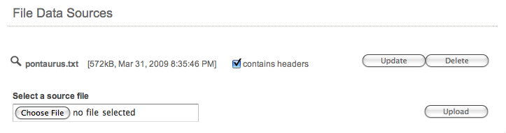
In order to define a file data source, the manager must upload a text file with a single header row and with tab separated values. Such tab delimited text files are easily created from any spreadsheet software or database management system.
Zip-compressed can be used and will be automatically unpacked on the server. Uploaded files (compressed or not) cannot be larger than 100MB.
Once the file has been uploaded, the manager can define whether the first row of the file is a header or not, by checking or unchecking the column headers box and pressing the save button. All the data fields will then be named after this header. If not set, generic names (col001, col002, col003 and so on) will be used.
When done adding data sources, the manager can press the Next button to go to the Mappings page.
In order to define a SQL data source, the manager must first configure a database connection, then add some SQL select statements to create views on the data.
Pressing the Edit button on the Source Data page will bring the manager to the SQL Settings page. This is the page where the database connection will be defined. To this effect, the following information is needed: the database type, the database connection URL, the database user and the database password. The right Java DataBase Connection (JDBC) driver must also be installed. Many of them are already bundled with the IPT. It is possible to add new ones, by downloading them and adding the jar file to the ITP lib folder and restarting the application server.
The SQL Settings page also gives a list of important parameters for the most used databases.

After defining the SQL settings, the manager must add some SQL SELECT statements to create views on the data. This is done by clicking on the ADD button and filling in the form.
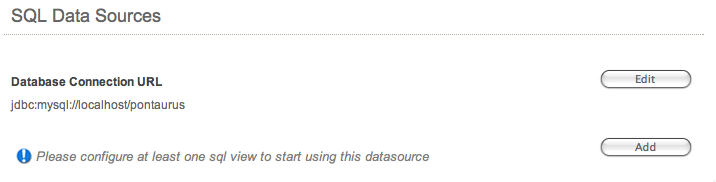
Several of these queries can be created, e.g. one for each Darwin Core extension in use.

Once all data sources have been defined, pressing the Next button will bring the manager to the Mappings page. The SQL statements will be mapped the same way as uploaded text files.
Data in the IPT is organised along a star schema: a fixed table holds Darwin Core terms and is linked to a number of extension tables (in a one-to-many relationship) that can be optionally configured and defined by the IPT administrator (see Extensions section above). Each extension can hold multiple records for a single core record, e.g. there can be many images for a species or occurrence.
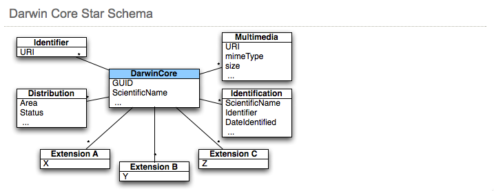
The Property Mappings page displays a list of the existing mappings, that can be edited, gives the possibility to add new mappings and allows to actually import or re-import the data.

When defining new data sources, the IPT will automatically map those fields whose name fits a Darwin Core term or the field name of an installed extension to the furthest extent possible. These mappings can be viewed or modified by pressing the Edit button.
The page is split in three parts:
In this section, the manager can define which fields are used as identifiers (IDs).
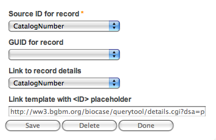
If the source is mapped to DarwinCore, the following fields are to be filled in:
NB: The save button will save the information that was entered in the fields. The Done button brings the manager back to the main Property Mappings page without saving the information.
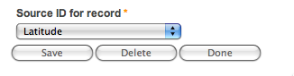
If the source is mapped to an extension, only one field is to be filled in:
Each Darwin Core or extension property mapped to a data source field is displayed in the list, followed by the data source field. This field can be changed as the drop-down menu displays the full list of fields of a given data source. It is also possible to assign a fixed value (a common value for all records, i.e. the project/collection code) by entering it in the text field (and choosing a blank value in the drop-down).
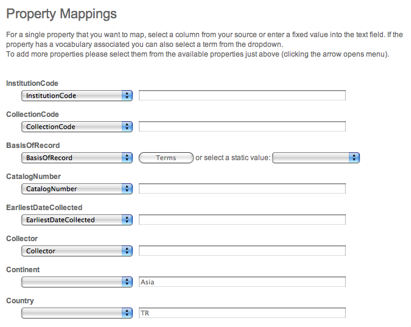
If controlled vocabulary has been defined for the Darwin Core or the extension, it is not possible to manually enter a fixed value. In this case, a Terms button and a new drop down are available.
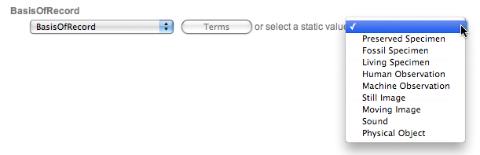
Managers have to use one of the controlled terms either as static values by selecting one from the drop down, or by selecting a source column that contains such values. As the source often uses different terms than the ones defined in the controlled vocabulary, the manager will be able to transform/map each value from the source to a controlled term in the vocabulary.
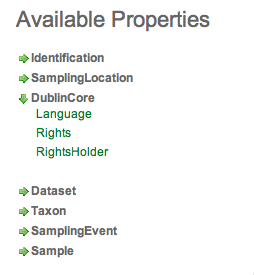
This section displays a list of the selected extension or core properties not yet mapped to a data source field. They are grouped in subsections that can be expanded by clicking on the green arrow. To map an available property to a data source field, the manager must click on the said property that will then move to the property mappings section. The manager can then choose which data source field should be mapped to it (by selecting it in the drop-down menu).
To add a new mapping, the manager must first choose what extension will be mapped to which data source, then press the Add button.
The procedure is then the same as working with existing mappings (see above).
The cache page allows the manager to actually import the data into the IPT. This is done by pressing the Import button. Depending on the amount of data, the operation can take a long time. Once done, the IPT displays a confirmation message. If errors occur during the import operation, they are attached as annotations to the resource. These annotations are available through the explore menu.
The cache can be rebuilt at any time when the manager wants to update the information with new or updated sources.
Once a Resource has been configured and its metadata filled in, it can be published on the IPT, via the Publish button.
Publishing a resource also registers it with GBIF and updates its metadata in the registry. A resource therefore has three states, indicated by a coloured box in the upper right corner of the page:
It is also possible to delete a resource by using the Delete button on its Basic Metadata page.